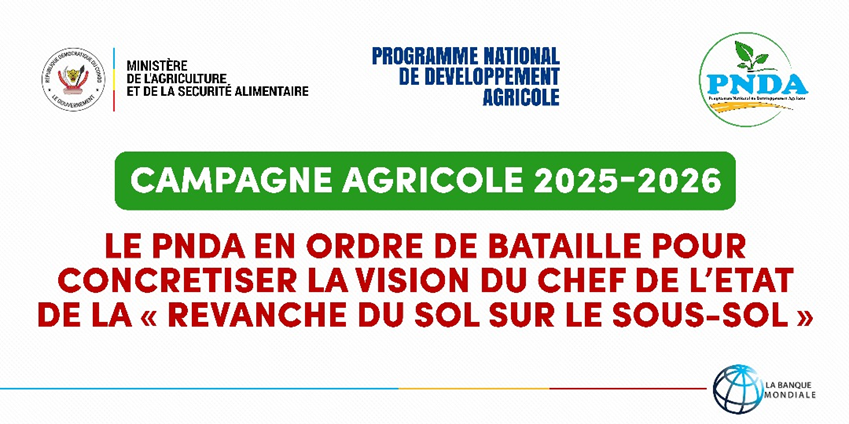

Cultivons ensemble un avenir agricole durable
une coopérative agricole togolaise qui accompagne les producteurs grâce à l'innovation, la coopération et des solutions durables pour une agriculture plus performante
Chiffres clés
Nos actualités
Annonce

Lancement d'un programme national de distribution de semences améliorées
lire plus
Besoin d'informations ?
Vous êtes adhérent, vendeur, acheteur, une ONG souhaitant être accompagnée ou un futur partenaire ?.